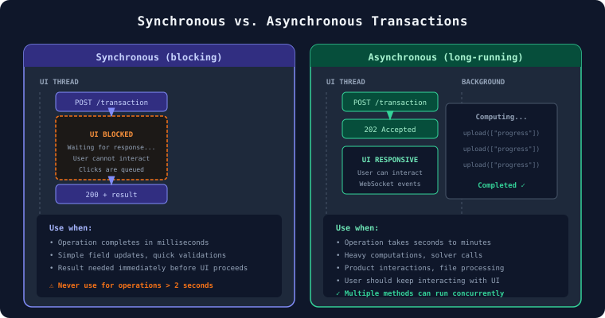
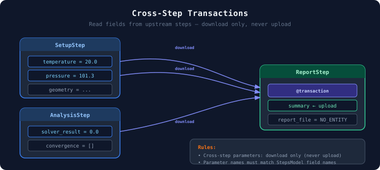
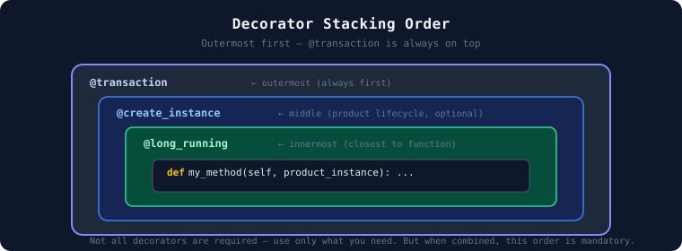

Transaction methods#
Every state mutation in SAF requires a transaction—no state changes outside
@transaction methods. This section covers how to choose the right transaction type,
design long-running workflows, read across steps, and stack decorators correctly.
Synchronous vs. asynchronous transactions#
{kind=link}

Synchronous (blocking) transactions#
Synchronous transaction methods are designed for short-lived operations. They execute on the UI thread and block further interactions until they complete.
Key characteristics:
If a synchronous transaction is invoked while a previous call is still running on the same project, subsequent calls are queued and executed sequentially. They do not run in parallel. (Synchronous transactions on different projects can execute concurrently.)
The queuing happens at the API level, which means the HTTP request from the client waits in line and can time out. The timeout for synchronous transactions cannot be configured.
In Dash callbacks, a synchronous transaction blocks the UI thread, making the application unresponsive.
Multiple rapid user interactions (for example, button clicks, dropdown changes) queue up and execute one by one, compounding the perceived lag.
Warning
Never use a synchronous transaction for operations that may take more than a few seconds. The queuing behavior and UI blocking will degrade the user experience.
@transaction(self=StepSpec(download=["selected_curve"], upload=["x_coords", "y_coords"]))
def compute_parametric_curve(self) -> None:
"""Compute a parametric curve. Completes in < 2 seconds."""
self.x_coords, self.y_coords = compute_curve(self.selected_curve)
Asynchronous (long-running) transactions#
Asynchronous transaction methods are designed for long-lived operations. They are executed in the API server as a background process (not to be confused with Dash background callbacks, which are a separate mechanism).
Key characteristics:
Multiple different long-running methods on the same project can run concurrently.
The same long-running method on different projects can also run concurrently.
Invoking the same long-running method on the same project while it is already running will return an HTTP error.
The UI remains responsive while the operation executes.
Ideal for heavy computations, file processing, or calls to external services.
@transaction(self=StepSpec(upload=["status", "current_increment"]))
@long_running
def stream_updates(self) -> None:
"""Stream progress updates to the frontend."""
for i in range(self.number_of_increments):
self.status = f"Processing increment {i}..."
self.current_increment = i
self.transaction.upload(["status", "current_increment"])
time.sleep(1)
Note
Because long-running methods execute asynchronously, the calling code does not wait for the result. You must check the method status separately to determine when it has completed:
# 1. Launch the long-running method
step = project.steps.my_step
step.my_transaction()
# 2. Check status
status = step.get_long_running_method_state("my_transaction").status
Comparison#
Aspect |
Synchronous |
Asynchronous |
|---|---|---|
Intended duration |
Short (milliseconds) |
Long (seconds to minutes) |
Concurrent calls |
Queued sequentially |
Run in parallel |
UI blocking |
Yes |
No |
Typical use cases |
Field updates, quick validations |
Computations, external service calls |
Progress streaming#
Long-running transactions can push intermediate state to the frontend using
self.transaction.upload(). This allows the UI to display real-time progress without
polling.
@transaction(self=StepSpec(download=["log_file"], upload=["log_file"]))
@long_running
def write_to_file(self, wait_time: float) -> None:
"""Write the current time to a file every second."""
try:
log_file = self.storage_scope.get_cached(self.log_file)
existing_logs = log_file.read_bytes()
except Exception:
existing_logs = b""
start_time = time.time()
while (time.time() - start_time) < wait_time:
current_time = f"{time.strftime('%Y-%m-%d %H:%M:%S', time.localtime())}\n"
existing_logs += current_time.encode()
self.log_file = self.storage_scope.store_stream(existing_logs)
self.transaction.upload(["log_file"]) # Push intermediate state
time.sleep(1)
Cross-step transactions#
A transaction can read fields from other steps by declaring them as parameters with
StepSpec(download=[...]). This is how data flows between steps in the DAG.
{kind=link}

Rules:
Parameter names must match step field names on
StepsModel.Cross-step parameters can only have
download(notupload).Be careful with fetching step fields from previous steps if those steps use long-running transactions. You could end up reading stale data if the previous step is still running.
@transaction(
self=StepSpec(upload=["summary"]),
setup=StepSpec(download=["temperature", "pressure"]),
analysis=StepSpec(download=["solver_result"]),
)
def generate_summary(self, setup: SetupStep, analysis: AnalysisStep) -> None:
"""Generate a summary reading from setup and analysis steps."""
self.summary = f"T={setup.temperature}, P={setup.pressure}, Result={analysis.solver_result}"
class AStep(StepModel):
a1: int = 99
a2: int = 1
@transaction(self=StepSpec(download=["a1"], upload=["a2"]), b_step=StepSpec(download=["b1"]))
def a_method(self, b_step: "BStep") -> None:
self.a2 = self.a1 + b_step.b1
class BStep(StepModel):
b1: int = 88
@transaction(self=StepSpec(upload=["b1"]), a_step=StepSpec(download=["a2"]))
def b_method(self, a_step: AStep) -> None:
self.b1 = a_step.a2 * 2
Decorator order#
When combining multiple decorators, the stacking order matters. @transaction is always
outermost, @long_running is always innermost.
{kind=link}

@transaction(self=StepSpec(download=["version"], upload=["instance_created"]), enable_termination_event=True)
@create_instance("mechanical_instance", MechanicalSecureManager)
@long_running
def launch_mechanical(self, mechanical_instance: MechanicalSecureManager) -> None:
"""Launch the Mechanical instance."""
self.transaction.raise_event(
message="Initializing Mechanical instance.",
stream_name="mechanical-output-stream",
)
mechanical_instance.initialize(version=self.version)
self.instance_created = True